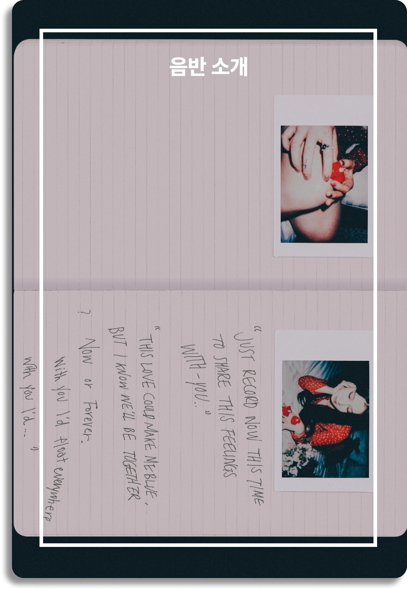
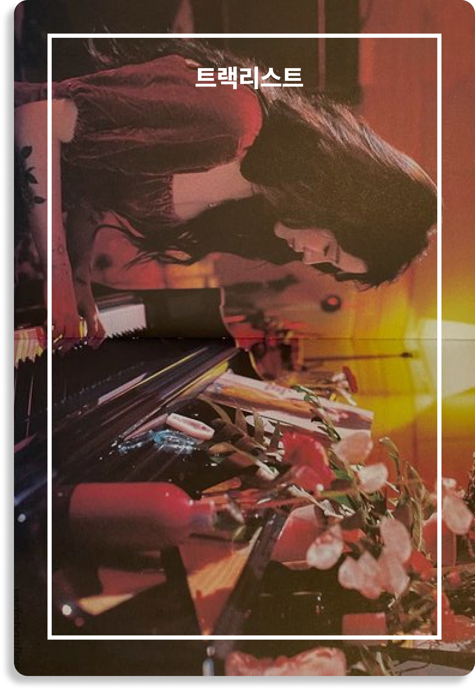
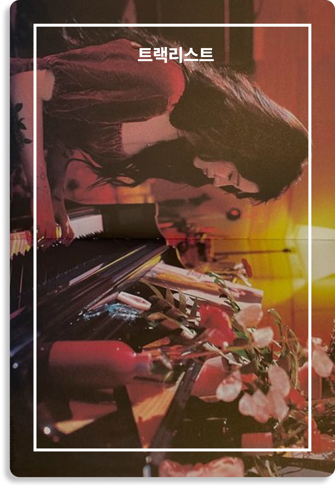
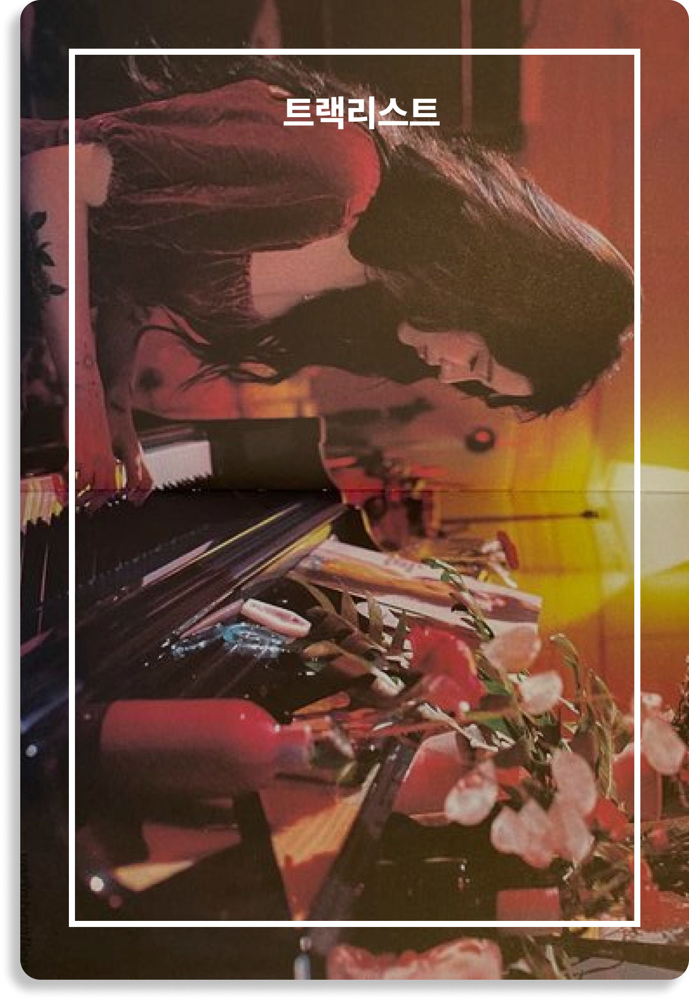

 

VINYL Love you on Christmas

백예린이 직접 작사 작곡한 크리스마스 송을 발표한다. 백예린은 7일 'Love
you on Christmas'와 'November song', 2곡이 담긴 디지털 싱글을
선보인다. 뛰어난 가창력과 음악 표현력, 또 특별한 감성으로 대중들에게
인정을 받아오고 있는 백예린인 만큼 이번 크리스마스를 맞이하는 신곡들에
대한 기대감도 높아질 것으로 전망된다. 또 이번 노래 두 곡 모두 백예린이
작사 작곡 모두에 나서며 아티스트 뮤지션으로서의 능력도 또 한번
발휘했다.
'Love you on Christmas'는 특별한 누군가와 함께 보내 더 행복한 날임을
표현한 곡. 크리스마스라는 날에 대한 백예린 표 감성으로 표현해낸
노래다. 'November song'은 사랑이 듬뿍 담겨진 곡으로 겨울에 대한
백예린의 낭만을 담아냈다. 올 상반기 'Bye bye my blue'로 큰 사랑을 받은
백예린이 다가오는 연말 들려줄 감성 높은 크리스마스 송, 연말을 맞이하는
대중들에게 감미롭고 특별한 선물이 될 것이다.
Q. 크리스마스 시즌송은 처음이에요. 이번 타이틀곡 “Love you on
Christmas”에 대한 소개 부탁드립니다.
누군가에겐 특별할 수도, 누군가에겐 그냥 추운 하루일 수도 있는
크리스마스가 소중한 사람과 보내서 더 행복하고 특별한 날임을 표현한
곡입니다. 사실 이 곡은 제가 2년 전에 쓴 곡인데, 이제야 나오게 됐어요!
Q. 이 곡을 통해 예린이 표현하고 싶었던 크리스마스는 어떤
느낌인가요?
크리스마스 시즌에 거리에서 들을 수 있는 캐럴들은 신나고 경쾌한 곡들이
많더라고요. 저한테는 가족과 함께 보냈던 시간이 제일 기억에 남아서
고요하면서도 따뜻한, 차분한 겨울 노래를 부르고 싶었습니다.
Q. “Love you on Christmas” 가사 중 예린이 가장 좋아하는
부분은?
'고요함이 깃드는 밤, 몰아치는 한 겨울에 파도 같은 그대. 그댄 나만의
christmas' 이 부분 쓸 때 좀 뿌듯했던 것 같아요. 제가 '바다'라는 단어를
좋아하는데, 제 안을 요동치게 할 만큼 소중한 사람을 표현한 가사에요. 전
작인 “그의 바다”에서 이어지는 면들도 있으니, 같이 들어봐 주세요-!
Q. 백예린만의 음악 색깔과 대중성 사이에서 갈등한 적은 없나요?
늘 주변 분들도 고민하는 문제이고 그 둘에 대한 갈등보다는, 아직
부족하지만 제가 하고 싶은 걸, 완벽하게 표현할 수 있는 멋있고
자아의식이 있는 사람이 되고 싶어요.
Q. 스무 살의 백예린이 추구하는 음악은?
어떤 음악이라고 표현하는 것보다, 저의 기록들이라고 얘기하고 싶어요!
제가 할 수 있는 게 많진 않지만, 제 글로 누군가의 마음을 공감시키는
일은 언제라도 정말 행복하고 즐거운 일인 것 같아서요. 나중에 돌아보면
슬펐던 것들, 좋았던 것들.. 모든 날들이 다 자랑스럽고 생각날 것
같습니다!
1. Love you on Christmas
작사: 백예린 / 작곡: 백예린 / 편곡: 윤석철, 구름 Computer programming
by 구름 / Piano by 윤석철 / E.Piano by 윤석철 / Strings arranged by
d.ear / Strings by 융스트링 Recorded by 백예린, 구름 at Studio ‘ㅃㅃ’,
정기홍 at Seoul Studios / Recording assisted by 지용주 at Seoul
Studios Mixed by 이태섭 at JYPE Studios / Mixing assisted by 최혜진,
엄세희 at JYPE Studios / Mastered by 도정회 at SoundMAX
"특별한 날이라서 행복한 게 아냐 그저 그대와 함께라서" 라는
가사에서 보여지듯 특별한 날이라서가 아닌 특별한 누군가와 함께 보내
더욱 행복한 크리스마스 임을 노래한 곡. 백예린 특유의 감성 넘치는
가사와 뛰어난 가창력이 듣는 이들의 마음 깊숙히 백예린이 생각하는
크리스마스에 대한 느낌을 전달한다.
2. November song
작사: 백예린 / 작곡: 백예린 / 편곡: 백예린 Computer programming by
구름 / Piano by 구름 / Strings arranged by d.ear / Strings by 융스트링
/ Background vocals by 백예린 Recorded by 구름 at Studio ‘ㅃㅃ’,
정기홍 at Seoul Studios / Recording assisted by 지용주 at Seoul
Studios Mixed by 구름 at Studio ‘ㅃㅃ’ / Mastered by 도정회 at
SoundMAX
겨울에 대한 백예린의 낭만이 가득 담겨있는 곡.
"사랑을 듬뿍 담았다"라는 백예린의 설명처럼 사랑스런 겨울에 대한 느낌을
백예린의 경쾌하면서도 귀여운, 또 청아한 보이스로 해석해낸 노래다.